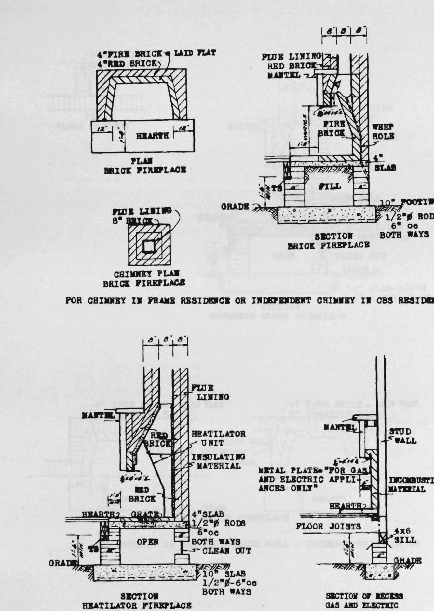
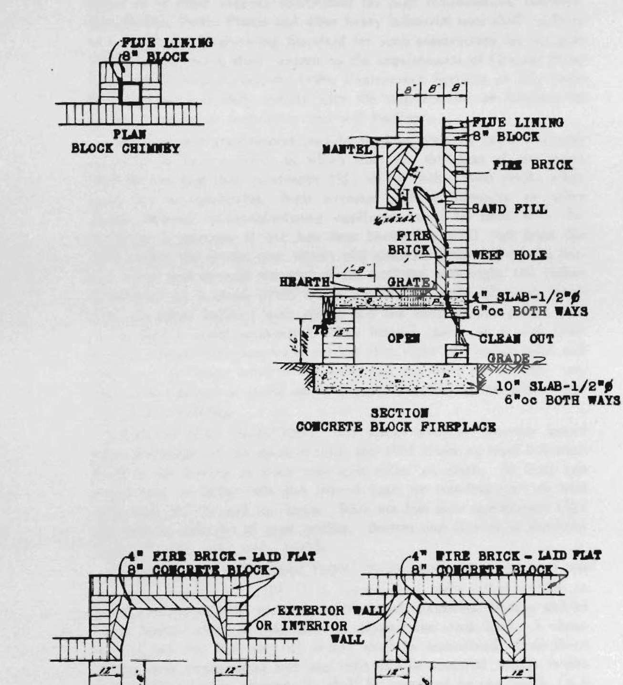

All stairways shall lead to the street directly or by means of a yard, court or fire-resistive passageway having a width at least equal to the aggregate widths of all the exits discharging into it; provided, they lead directly to a street, alley or front of the building and are provided with a balcony on the exterior of the building not less than three (3) feet wide and five (5) feet long. Such balcony shall be constructed of incombustible materials and when the floor of such balcony is located more than twelve (12) feet above the sidewalk directly below, such balcony shall be equipped with an approved counter-balanced stairway or ladder.
Where stairways discharge through the fire-resistive passageways such passageways shall be not less than seven (7) feet in clear height and with a width at least equal to the stairway or stairways served by such passageways. All openings into such passageways shall be protected by one-hour fire-resistive doors as specified in Section 4304.
All exits shall be so arranged as to make clear the direction of egress to the exterior of the building and shall be so located that they are readily accessible and visible. When not visible to all occupants, adequate signs shall be provided to indicate their location. For buildings with sleeping rooms, schools and places of detention, exits shall be so arranged that it is possible to go in either direction at any point in a corridor to an exit.
Stairways shall abut on not more than one side of an elevator enclosure.
No portion of any building shall be more than one hundred fifty (150) feet (along the line of travel) from the nearest exit, and no corridor exit door shall be more than one hundred (100) feet (measured along the line of travel) from the nearest exit. In Group D and H buildings all doors providing egress from public hallways and all doors providing egress from the building shall open in the direction of exit travel.
Sec. 3304. DOORS. Doors shall not open immediately on a flight of stairs but on a landing at least equal to the width of the door.
Doors giving access to stairways shall swing with the direction of exit travel. Vertical sliding doors and rolling shutters shall not be used. There shall be no obstructions on stairways or landings nor to the full swing of doors. Swinging doors in their swing shall not reduce the effective width of stairways or landings to less than thirty (30) inches nor when open interfere with the full use of the stairs.
All doors in exit enclosures or providing access to exterior stairways shall be self-closing and be kept normally closed and shall be of not less than one-hour fire-resistive construction as specified in Section 4304, except that doors facing a street and at street level may be unprotected wood. All doors shall be constructed and installed in a workmanlike and tight fitting manner.
All doors used in connection with exits shall be so arranged as to be readily opened from the side from which egress is made or from
225
both sides when the building is occupied. Locks if provided shall not require a key to operate from the inside.
Sec. 3305. RAILINGS. All stairways shall have walls or well secured balustrades or guards on each side and handrails shall be placed on at least one side of every stairway and for stairways exceeding forty-four (44) inches in width shall have handrails placed on each side. Stairways over seven (7) feet wide shall be provided with one or more continuous intermediate handrails substantially supported and the number and position of intermediate handrails shall be such that there is not more than sixty-six (66) inches between adjacent handrails.
Handrails and railings shall be placed thirty (30) inches above the nosing of treads and ends of handrails shall be returned to the wall. All handrails shall be constructed to withstand the pressure of sixteen (16) pounds per lineal foot applied to the handrail. All handrails shall be securely fastened to the wall and there shall be a clearance behind every handrail of not less than one and one-half (1½) inch at every point.
Sec. 3306. LIGHTING. Every stairway or other means of exit into corridors and passageways appurtenant thereto shall be provided with an adequate system of lighting, either natural or artificial. Lights in the exit signs shall be kept burning at all times that the building served by such stairways or exits is being used or occupied.
Sec. 3307. DETAILED REQUIREMENTS. Stairways and landings, returns and passageways serving such stairways shall be not less than forty-four (44) inches wide; except, that for dwellings and when serving mezzanines or not more than one family or one apartment in buildings not exceeding two stories in height the required width may be reduced to not less than three (3) feet. All such widths shall be clear of all obstructions; except that handrails attached to walls may project within the required width not more than three and one-half (3½) inches at each side when the stairway is forty-four (44) or more inches in width and on one side when the stairway width is less than forty-four (44) inches. If newells project above tops of rails a minimum clear width of not less than that specified in this paragraph shall be provided between the face of the newell and the face of the wall or newell opposite.
The rise of stairways shall be not more than seven and one-half (7½) inches and the tread exclusive of the nosing not less than ten (10) inches (maximum pitch 37 degrees), and there shall be not more than seventeen (17) risers in any one run between landings; provided, that stairways in dwellings and stairways serving mezzanine floors may have a rise of not more than eight (8) inches and a tread exclusive of the nosing of not less than nine (9) inches. Rules governing construction of hotels, apartment houses, rooming houses and restaurants, as promulgated by the Hotel Commission of the State of Florida, governing occupancies, as specified in Chapter 13, prohibit more than thirteen (13) risers without a platform or platforms.
LANDING. At the top and bottom of every flight of stairs there
226
shall be a proper landing, which shall be level in every part and on the same level as the floors of the building which they serve; shall have a length of not less than forty-four (44) inches, and a width of not less than the widest flight connected thereto, with a minimum of forty-four (44) inches.
Width and length of all quarter landings shall be not less than the required width of the widest flight connected thereto. The length of that part of any floor landing in front of the ascending or descending flights connecting therewith, or both of them, except, at the exit level, shall be regulated in the same manner as a half landing, and the landing at the exit level shall be not less than four (4) feet in length; provided, however, the size of any landing over which a door swings shall be such that an arc with a radius equal to the width of the door plus the minimum required width of any connected flight, using the door hinge as a center, shall clear the newell post or the wall framing.
The walls at the outer corners of landings shall be curved on a radius of at least two (2) feet, or a forty-five (45) degree splay not less than twenty (20) inches wide shall be provided to eliminate right angle corners.
Sec. 3308. STAIRWAY ENCLOSURES. (a) Enclosed interior stairways shall be constructed in accordance with Chapters 30 and 43 and shall be of not less than two-hour fire-resistive construction.
(b) Smokeproof tower stairways shall be constructed in accordance with Section 3315.
(c) Outside stairways shall be constructed as required in Section 3316.
All required stairways and ramps in buildings three stories or more in height, including landings and parts of floors between stairways which lie in the path of travel shall be enclosed as specified under Occupancy in Part III, under Types of Construction in Part V, and in Chapter 30; except that monumental stairways leading only from the street floor level to the mezzanine floor and second floor or basement and which do not constitute required means of exit in public buildings or stores shall be exempted from the enclosure requirements.
Exit enclosures shall not be used for storage in any manner whatsoever and shall not contain any material or equipment liable to cause fire, explosion or panic.
At the top of every stairway enclosure a ventilating skylight with a horizontal area with not less than eight (8) square feet shall be installed as specified in Section 3402, or in lieu of such skylight an equivalent window opening glazed with plain glass may be provided in the penthouse walls. Fixed openings not less than five hundred (500) square inches in area shall be provided at the top of each stairway enclosure for ventilation.
All parts of every stairway shall be kept in perfect repair at all times; sufficiently lighted by either natural or artificial lighting; no mirror shall be placed or maintained in any stairway at any time; and nothing shall be built or placed in any manner or location so that it will conceal any stairway door.
227
Sec. 3309. STAIRWAYS REQUIRED. The number of stairways provided for each use or occupancy shall be as required in the following tabulation for three (3) story buildings. For two (2) story buildings the allowable area may be increased fifty (50) per cent. For buildings four (4) stories or more in height the allowable area shall be decreased two (2) per cent per floor for each floor above the third floor to and including the eighth floor and shall be decreased one (1) per cent for each additional floor above the eighth floor; provided, that in no case shall there be less than two (2) stairways serving each floor for each building three (3) stories or more in height. Where the entire building is sprinkled in accordance with the provisions of Chapter 38 the allowable areas tabulated below may be increased thirty-three and one third (33 1-3) per cent.
Elevators shall not be included in the calculations of the number of stairways required. All buildings, except Group I buildings and buildings in Division 1 and 2 of Group J, shall have not less than two (2) stairways from each floor.
The number of required stairways for Group A, B and C buildings is specified in Chapters 6, 7 and 8 respectively.
NOTE: Basic Area for computing required number of stairways; provided, however, the distance of travel specified in Section 3303 shall not be violated.
BASIC AREA FOR COMPUTING REQUIRED NUMBER OF STAIRWAYS.
| No. of Stairways required | Maximum Areas for Types I and II Buildings (Sq. Ft.) | ||||
|---|---|---|---|---|---|
| Group D Buildings | Group E Buildings | Group F Buildings | Group G Buildings | Group H Buildings | |
| 2 | Up to 8000 | Up to 9000 | Up to 12000 | Up to 12000 | Up to 9000 |
| 3 | Up to 18000 | Up to 20000 | Up to 25000 | Up to 25000 | Up to 20000 |
| 4 | Up to 28000 | Up to 30000 | Up to 40000 | Up to 40000 | Up to 30000 |
| 5 | Up to 40000 | Up to 40000 | Up to 57000 | Up to 60000 | Up to 42000 |
| 6 | Up to 54000 | Up to 50000 | Up to 76000 | Up to 85000 | Up to 56000 |
| 7 | Up to 70000 | Up to 60000 | Up to 97000 | Up to 115000 | Up to 72000 |
| 8 | Up to 88000 | Up to 70000 | Up to 90000 | ||
| 9 | Up to 108000 | Up to 80000 | Up to 110000 | ||
| 10 | Up to 90000 |
| Maximum Areas for Types III, IV and V Buildings (Sq. Ft.) | |||||
|---|---|---|---|---|---|
| 2 | Up to 8000 | Up to 9000 | Up to 12000 | Up to 12000 | Up to 9000 |
| 3 | Up to 15000 | Up to 17000 | Up to 21000 | Up to 24000 | Up to 17000 |
| 4 | Up to 24000 | Up to 27000 | Up to 32000 | Up to 38000 | Up to 26000 |
| 5 | Up to 35000 | Up to 38000 | Up to 45000 | Up to 56000 | Up to 37000 |
| 6 | Up to 48000 | Up to 52000 | Up to 60000 | Up to 79000 | Up to 50000 |
| 7 | Up to 63000 | Up to 68000 | Up to 77000 | Up to 108000 | Up to 65000 |
| 8 | Up to 80000 | Up to 86000 | Up to 96000 | Up to 82000 |
Exceptions: (1) Group D buildings shall be provided with not
228
less than one (1) smokeproof tower constructed as specified in Section 3315 when such building exceeds two (2) stories in height.
(2) Group E—In automobile storage garages where a system of ramps continuous from the ground floor to top floor is used to transport automobiles from floor to floor, the number of stairways required shall be not less than one-half that shown in the above tabulation.
(3) Where one horizontal opening is provided, the allowable areas tabulated may be increased fifteen (15) per cent and where more than one such exit is provided, such areas may be increased not to exceed twenty-five (25) per cent.
Sec: 3310. RAMPS. Wherever stairways are required by this Code, ramps with a slope not greater than one (1) foot in eight (8) feet may be substituted.
Ramps shall comply with all the requirements for stairways as to construction, width, enclosures, landing, lighting and ventilation.
Ramps shall be surfaced with an approved non-slip material.
Handrails shall not be required where the slope of the ramp is less than one (1) foot in ten (10) feet.
Sec. 3311. HORIZONTAL EXIT. A horizontal exit shall consist of one (1) or more protected openings through or around an exterior or fire wall or of one (1) or more bridges connecting two (2) buildings or parts of buildings entirely separated by fire walls.
Openings used in connection with horizontal exits shall be protected by one-hour fire-resistive doors as specified in Section 4304. If swinging doors are used there shall be adjacent openings with doors swinging in opposite directions, with signs on each side of the wall indicating the exit door which swings with the travel from that side.
Such doors shall be kept continuously unlocked whenever the building is occupied and shall be self-closing.
Sec. 3312. SIGNS AND LIGHTING. Signs having white lights not less than five (5) inches high on a green field indicating location of exits shall be provided not only at the exit but at other points in the building wherever necessary to clearly indicate the direction of egress. Lights shall be kept burning during all times that the building is used or occupied.
Sec. 3313. PASSAGEWAYS AND CORRIDORS. Every building shall be constructed so that one (1) main corridor on each floor shall be at least forty-two (42) inches in clear width, and the width of any such corridor which serves more than twelve (12) rooms shall be increased at the rate of one (1) inch for each additional room up to a maximum width of six (6) feet; provided such main corridor on each floor shall run through to the outside wall at each end, or it may turn at right angles at either or both ends, provided the distance from the main hall to the outside wall at any point is not more than the depth of the room facing the outside of the building, and provided further that
229
the main corridor, so turned, shall extend to an exterior wall adjacent to a street, alley or court, and that a door or window shall be provided in the said hall at the end of the main corridor.
Sec. 3314. EXCEPTIONS. Stairways in Group I buildings, stairways serving only one apartment not above the second floor level, or stairways leading to mezzanine floors not exceeding one thousand (1000) square feet in area are exempted from the width, rise, tread and enclosure provisions in this Chapter but in no case shall such stairways have a rise of more than eight (8) inches and a tread exclusive of the nosing of less than nine (9) inches.
Sec. 3315. SMOKEPROOF TOWER. (1) Where required. A smokeproof tower consisting of a stairway with exterior access, entirely closed by masonry walls of not less than four-hour fire-resistive construction and floors and ceilings of not less than two-hour fire-resistive construction as specified in Chapter 43 and constructed as specified in this Section shall be required in every building of Group D, E, F, G and H occupancies three (3) stories or more in height. Smokeproof towers shall be installed in Group A, B and C buildings as specified in Chapters 6, 7 and 8, respectively.
(2) Construction. The stairways, landings, platforms and balconies of smokeproof towers shall be constructed as required for stairways, except that they shall be of incombustible materials throughout, except for handrails which may be of wood. The enclosure shall extend from the street level to a penthouse on the roof of the building and shall be roofed over with incombustible materials. Light and ventilation shall be provided at the top of every such enclosure as required for stairways.
Balustrades on the vestibules and balconies shall be not less than three (3) feet and six inches (3’-6”) in height. Exit lights shall be provided as required in Section 3312.
(3) Access and Egress. Access to the smokeproof tower shall be provided from each story by means of vestibules open to the outside on an exterior wall or by means of balconies over-hanging an exterior wall but not subject to severe fire exposure. Every such vestibule, balcony or landing shall have an unobstructed length not less than the combined required width of exit doors opening upon such balcony or landing and shall be directly open to a street, alley or yard or to an enclosed court open at the top and not less than fifteen (15) feet in width and six hundred (600) square feet in area.
Access from the building to vestibules or balconies and to the enclosure shall be through doorways not less than thirty (30) inches wide nor less than seventy-five (75) inches in clear height. These openings shall be provided with self-closing fire-doors of not less than one-hour fire-resistive construction, as specified in Section 4302, swinging in the direction of exit travel; provided that clear wire glass not exceeding seven hundred and twenty (720) inches in area shall be provided in all such doors giving access to the enclosure from the balcony or vestibule. Where locks or latches are provided they shall be of an approved pres-
230
sure-release type and shall be so designed as to provide access from the building at every floor and roof level.
Stairways of smokeproof towers shall provide continuous uniform egress from the roof and all stories to street grade. Egress shall be pro- vided at the ground floor level either directly or through a passageway not less than forty-four (44) inches in clear width and eight (8) feet in clear height to a street, yard or alley not less than ten (10) feet in width. The walls of such passageway shall be of not less than four-hour fire-resistive construction and the ceiling and floor of not less than two- hour fire-resistive construction as specified in Chapter 43. The walls of any such passageway shall be unpierced throughout their entire length.
(4) Location. Every smokeproof tower required by this Code shall be located so as to furnish the best means of egress for the occupants of the building and access shall be provided thereto by means of a public room, public hall or passageway not less than thirty-six (36) inches in clear width and in no case shall access thereto be through another apart- ment, guest room, office or private room of any nature.
Sec. 3316. OUTSIDE STAIRWAYS. Outside stairways of the re- turn platform or straight run type may be used as a required means of exit for buildings not exceeding three (3) stories or fifty-five (55) feet in height but in no case shall such stairways constitute more than fifty (50) per cent of the required exit capacity. All outside stairways shall be located so as to lead directly to a street or alley or to a yard directly connected with a street or alley.
The stairways, landings, platforms and balconies shall be constructed as specified for stairways in this Chapter, except that they shall be of incombustible materials throughout; provided that stairways serving only the second floor may be constructed of combustible material, except in No. 1 Fire Zone. Structural metal shall be not less than one-quarter (1/4) inch thick and shall be so framed as to permit ready access for inspection and painting. All windows and other openings adjacent to such stairways shall be provided with fixed metal covered sash and frames and wire glass or be provided with shutters or doors of one-hour fire-resistive construction as specified in Chapter 43.
No part of any such outside stairway shall be within ten (10) feet of a lot line which does not form the boundary of a street or alley.
CHAPTER 34. DOORS, WINDOWS AND SKYLIGHTS.
Sec. 3401. DOORS AND WINDOWS. Fire doors where required shall be as specified in Section 4304. All such doors shall be self-closing and if not kept normally closed shall be arranged to close automatically with the fusing of an approved fusible link.
Windows required to have metal frames shall be constructed either of steel or wrought iron rolled shapes or of hollow galvanized sheet iron as specified in Section 4304.
231
PLATE GLASS WINDOWS. Plate glass windows, except minor transoms, facing on public streets or arcades, set in any first floor exterior wall, shall be not less than one-fourth (1/4”) inch in thickness, shall be not more than ninety-one (91) square feet (maximum of eighty-four (84”) inches in height and one hundred and fifty-six (156”) inches in length) in size without approved division bars, and shall be set in approved non-corrosive metal setting. If wood sill is used it shall be covered with the same approved quality of non-corrosive metal, side rails shall be securely fastened with non-corrosive screws into side jambs of not less than one and one-eighth by three and one-half (1 1/8 x 3 1/2”) inches and such jambs shall be securely fastened to the masonry wall with not less than three-eighth (3/8”) inch expansion bolts, or approved steel screw nails, not more than four (4) feet apart, and when such jambs are attached to wood members they shall be securely nailed or bolted in an approved manner.
For floors above first floor these requirements may be increased at the discretion of the Building Inspector.
When wire glass is required, it shall mean glass the thickness of which at the thinnest point shall not be less than one-fourth (1/4) of an inch and in which a wire netting is embedded. Wire glass shall be set with putty and metal stops.
GUARD RAILS. Except in dwellings, all windows above the third (3rd) flood line, the window stools shall not be less than three (3) feet above finished floor, provided however, that stools may be less than specified above if approved metal guard rails are placed across windows. Guard rails not less than three (3) feet above finished floor shall be provided for all other openings which do not open on balconies, porches or platforms, in accordance with Section 3501.
Every window in every building more than three (3) stories in height shall be equipped with approved device or devices which shall permit cleaning of the exterior of windows without danger to person or persons cleaning such windows; such devices to be of such pattern and construction as will reasonably and safely answer the purpose for which they are intended; provided, however, that if windows are of such construction that they may be easily cleaned from the inside of the building, they need not be equipped with such devices.
STORM SHUTTERS. All buildings now existing or hereafter erected shall be required to have approved storm shutters, capable of withstanding a wind pressure of at least thirty (30) pounds per square foot, for openings on that portion of the building facing public streets or other public places, as a protection to the public from flying debris during windstorms; the construction and anchorage of which shall be approved by the Building Inspector. See page 312
Suitable place for storage of these shutters shall be provided on the premises or any place of easy access where they may be transported to the site within a reasonable time after notification of an impending windstorm.
232
It is not the intent of this Section to require that minor window openings, or solid doors which are provided with substantial bolting, or standard windows in a high and inaccessible place not readily reached from the ground level, to be so protected; however, large windows, plate glass windows, and openings of similar character shall be protected especially in business areas where the public gathers for transaction of business and where the preservation of such structures is deemed essential for the public good.
It is not the intent of this Section to require residences of Group I Occupancy or other minor buildings in areas outside of business centers, to be so protected; however, such protection is recommended as a preservation for the structure and a safeguard against flying debris during such windstorms.
Sec. 3402. SKYLIGHTS. All skylights constructed with metal frames shall be substantially built with interlocking seams. All skylights, the glass of which is set at an angle of less than forty-five (45) degrees from the horizontal, if located above the first story, shall be set at least one (1) foot above the roof. The curbs on which the skylight rests shall be constructed as required for inner court walls or for masonry.
When wire glass is required for skylights the size shall not exceed seven hundred and twenty (720) square inches in area or forty-eight (48) inches in any dimension in any one panel. All glass in skylights shall be wire glass, except that skylights over vertical shafts extending through two or more stories shall be glazed with plain glass as specified in this Section; provided, that wire glass may be used if ventilation equal to not less than one-eighth (1/8) the cross sectional area of the shaft, but never less than four (4) feet, is provided at the top of such shaft.
Any glass not wire glass shall be protected above and below with a screen constructed of galvanized wire not smaller than No. 12 B. and S. gauge with a mesh not larger than one (1) inch. The screen shall be substantially supported below the glass.
Skylights installed for the use of photographers may be constructed of galvanized metal frames and plate glass without wire netting.
Skylights in foundries or buildings in which acid fumes are present as an incident to the occupancy of the building, may be of wood, by special permission of the Building Inspector.
Ordinary glass may be used in the roofs and skylights for greenhouses, provided the height of the greenhouse at the ridge does not exceed twenty (20) feet above the grade. The use of wood in the frames of skylights will be permitted in greenhouses outside of Fire Zones No. 1 and 2, if the height of the skylight does not exceed twenty (20) feet above the grade, but in other cases galvanized metal frames and galvanized metal sash bars shall be used.
Glass used for the transmission of light, if placed in floors or
233
sidewalks, shall be supported by metal or reinforced concrete frames, and such glass shall be not less than one-half (1/2) inch in thickness. Any such glass over sixteen (16) square inches in area, shall have wire mesh embedded in the same or shall be provided with a galvanized wire screen underneath as specified for skylights in this Section. All portions of the floor lights or sidewalk lights shall be of the same strength as is required by the Code for floor or sidewalk construction, except in cases where the floor is surrounded by a railing not less than three feet and six inches (3’-6”) in height, in which case the construction shall be calculated for not less than skylight loads.
PROTECTION OF SKYLIGHTS AND ROOFS. Where walls are carried up above the roofs of adjoining buildings, proper means shall be provided and used by the person erecting the walls for the protection of the skylights and roofs of such adjoining buildings.
Should the owner of such adjoining building refuse permission to have his roofs and skylights protected, such refusal shall be reported in writing to the Building Inspector, and it shall then be the duty of the owner refusing such permission to make his skylights and roofs safe at his own expense. Such refusal by said owner shall relieve the owner or person erecting the building from any responsibility for damage done to persons or property on or within the premises affected.
CHAPTER 35. BAYS AND BALCONIES
Sec. 3501. CONSTRUCTION. Construction of walls and floors in bay and oriel windows shall conform to the construction allowed for exterior walls and floors of the Type of construction of the building to which they are attached. The roof covering of a bay or oriel window shall conform to the requirements for roofing of the main roof of the building.
All exterior balconies attached to or supported by masonry walls shall have brackets or beams constructed of wire, steel, concrete or other incombustible material. All railings for balconies or porches shall be not less than three feet and six inches (3’-6”) in height above the floor of such balcony or porch. Balconies or porches shall be designed to support, in addition to their own weight, a live load of not less than one hundred (100) pounds per square foot. Railings of balconies shall be designed to support a horizontal thrust of not less than twenty (20) pounds per lineal foot of railing uniformly distributed along its length.
234
CHAPTER 36.
PENTHOUSES AND ROOF STRUCTURES
Sec. 3601. PENTHOUSES AND ROOF STRUCTURES. Bulkheads or penthouses, when used only for the purpose of enclosing staircases on roofs, elevator machinery, water-tanks, ventilating apparatus, exhaust chambers or other machinery need not be considered in determining the height of the building.
No penthouse or other projection above the roof shall exceed twenty-eight (28) feet in height above the roof when used as an enclosure for tanks or for elevators which run to the roof and in all other cases shall not extend more than twelve (12) feet in height above the roof. The aggregate area of all penthouses and other roof structures shall not exceed twenty (20) per cent of the area of the roof. No penthouse, bulkhead or any other similar projection above the roof shall be used for manufacturing, business, habitation, offices or storage, except that they shall be permitted to be used for the making of blueprints, photographic prints, for scientific observation, or summer houses; when used for private dwellings, they shall be considered as a floor of the building and such height shall then be computed in determining the allowable height of the building.
Roof structures of Type I buildings shall be constructed with floors, walls and roof as required for the main portion of the building.
Walls of roof structures parallel to and within four (4) feet of the exterior wall of Type II or III buildings shall be constructed the same as the exterior wall of the story immediately below. Such wall shall project two (2) feet above the roof and two (2) feet beyond the sides of such roof structures, except that the side projection shall not be required when the adjoining side walls are of masonry. Walls other than those occurring within four (4) feet of an exterior wall on Type II or III buildings shall be of not less than one-hour fire-resistive construction. The restrictions of this paragraph shall not prohibit the placing of wood flagpoles or similar structures on the roof of any building.
- Supporting members of tanks installed in or on all new or existing buildings shall be designed and constructed in strict conformity to the design regulations of this Code.
- In or near the bottom of each tank there shall be a pipe or outlet of adequate size, fitted with a suitable gate valve, to permit ready drainage of the tank in case of necessity.
- Coverings of tanks on roofs shall be of metal and shall be securely fastened down. Hoops of wooden tanks shall be of metal having circular cross section, and shall be equipped with take up turn buckles.
Sec. 3602. TOWERS AND SPIRES. Towers or spires when enclosed shall have exterior walls as required for the building to which they are attached. Towers not enclosed and which extend more than seventy-five (75) feet above grade shall have their framework con-
235
structured of iron, steel or reinforced concrete. No tower or spire shall occupy more than one-fourth (1/4) of the street frontage of any building to which it is attached and in no case shall the base area exceed sixteen hundred (1,600) square feet unless conforming entirely to the Type of Construction requirements of the building to which it is attached and being limited in height as a main part of the building. If the area of the tower or spire exceeds one hundred (100) square feet at any horizontal cross section its supporting frame shall extend directly to the ground. The roof covering of spires shall be as required for the main roof of the rest of the structure.
Skeleton towers used as wireless masts and placed on the roof of any building shall be constructed entirely of incombustible materials and shall be directly supported on an incombustible framework to the ground. They shall be designed to withstand a wind load from any direction as specified in Section 2307 in addition to any other loads.
CHAPTER 37.
CHIMNEYS AND HEATING APPARATUS
Sec. 3701. CHIMNEYS. Chimneys shall be constructed in conformity with “A Standard Ordinance for Chimney Construction” recommended by the National Board of Fire Underwriters, Fifth Edition, revised 1935 or as subsequently revised, except as specified in this Chapter. All chimneys shall be designed in accordance with the Engineering Section of this Code.
The walls of all chimneys whether used for appliances using coal, coke, wood, gas or oil shall be built of brick, concrete, stone, hollow tile or clay or concrete or of concrete blocks; provided, that a metal smokestack as specified in Section 3702 may be used.
Flue linings shall be made of fire clay or other suitable refractory clays adapted to withstand reasonably high temperatures and flue gases and shall have a softening point not lower than nineteen hundred and ninety-four (1994) degrees Fahrenheit. Flue linings shall be not less than five-eighths (5/8) of an inch in thickness and shall be built in as the outer walls of the chimney are constructed. All joints and spaces between the masonry and lining shall be thoroughly slushed and grouted full as each course of masonry is laid. Cracked, broken or otherwise defective linings shall not be used. Flue linings shall start from a point not less than eight (8) inches below the center line of smoke pipe intakes or in the case of fireplaces from the apex of the smoke chamber and shall be continuous to a point not less than six (6) inches above the enclosing walls.
Exceptions: Flue linings may be omitted in brick chimneys for residence buildings provided the walls of the chimneys are not less than eight (8) inches thick and that the inner course shall be of fire brick with a fire resistance equal to that required for flue linings.
236
DETAIL
CHIMNEY AND FIREPLACE CONSTRUCTION
RESIDENCES

PLAN BRICK FIREPLACE
CHIMNEY PLAN BRICK FIREPLACE
SECTION BRICK FIREPLACE
FOR CHIMNEY IN FRAME RESIDENCE OR INDEPENDENT CHIMNEY IN CBS RESIDENCE
SECTION HEATILATOR FIREPLACE
SECTION OF RECESS GAS AND ELECTRIC SPACE HEATERS
236A
PLAN
BLOCK CHIMNEY
FLUE LINING 8” BLOCK
SECTION
CONCRETE BLOCK FIREPLACE
8” 8” 8” FLUE LINING 8” BLOCK FIRE BRICK SAND FILL FIRE BRICK WEEP HOLE HEARTH GRATE 4” SLAB-1/2”ø 6”oc BOTH WAYS OPEN CLEAN OUT GRADE 10” SLAB-1/2”ø 6”oc BOTH WAYS
PLAN
CONCRETE BLOCK FIREPLACE
4” FIRE BRICK - LAID FLAT 8” CONCRETE BLOCK EXTERIOR WALL OR INTERIOR WALL HEARTH
4” FIRE BRICK - LAID FLAT 8” CONCRETE BLOCK HEARTH
FOR CHIMNEY IN CONCRETE BLOCK WALL - INTERIOR OR EXTERIOR
DETAIL
CHIMNEY AND FIREPLACE CONSTRUCTION
RESIDENCES
236B

The walls of brick chimneys shall be not less than eight (8) inches thick and shall be lined except as provided above. All brick work shall be laid with full mortar joints and shall be struck smooth where exposed to the weather. No mortar lining shall be permitted. Brick set on edge shall not be permitted in chimney construction.
Concrete chimneys cast in place shall be suitably reinforced vertically and horizontally. The walls shall be not less than eight (8) inches thick and shall have a flue lining as specified in this Section.
Hollow blocks or building tile of clay or concrete shall not be used for the walls of an independent chimney but may be used for chimneys built in connection with exterior party walls of hollow units for buildings not exceeding three (3) stories in height, provided they shall be lined as specified above. The outer eight (8) inches of such a wall may serve as the outside wall of the chimney.
Chimneys shall extend at least three (3) feet above flat roofs and not less than two (2) feet above the ridge of gable and hip roofs or the high point of mansards nearest thereto.
Chimneys shall be built upon solid masonry or reinforced concrete foundations properly proportioned to carry the weight imposed without settlement or cracking. The chimney shall carry no load except its own weight and such load shall be transmitted to the foundation in such manner as to prevent the shearing or falling off of any part of the chimney.
Flues shall be built as nearly vertical as possible and in no case at an angle greater than thirty (30) degrees from the vertical.
When any single flue has an effective area exceeding two hundred (200) square inches the wall shall be not less than eight (8) inches thick and shall have flue lining as specified in this section, except that when flues become too large for fire clay flue lining such flues shall be lined with fire brick for a distance at least twenty-five (25) feet from the point of intake.
There shall be but one connection to a flue irrespective of whether the fuel used be coal, coke, wood or oil. Ordinary and low pressure heating devices burning solid fuels shall have a minimum effective flue area of not less than the following, and such area shall be provided by a flue having its short dimensions not less than two-thirds (2/3) the long dimensions.
Small special stoves and heaters…28 sq. inches Stoves, ranges and heaters …40 sq. inches Fireplaces (at least 1/12 the fireplace opening)…50 sq. inches Warm Air furnaces, steam and hot water boilers…70 sq. inches
All flues to which large ranges, heating furnaces, boilers, automatic gas water heaters or fireplaces are to be connected shall be subjected to a smoke test before acceptance but the test shall not be made until the mortar has thoroughly seasoned. Such test shall be made by the mason contractor in the presence of the Building Inspector.
Sec. 3702. SMOKESTACKS. Masonry smokestacks (whether
237
radial or of other shapes) constructed for high temperatures, Incinerators, Boilers, Power Plants and other heavy industrial uses shall conform to a recognized Engineering Standard for such construction for the particular use intended, shall conform to the requirements of Chapter 23 of this Code for wind stresses and to the Engineering Sections of this Code for masonry, and shall comply with the requirements of Chapter 28 of this Code as to foundation and soil loading.
Steel or iron smokestacks may be used in place of brick chimneys specified in Section 3701, in which case the thickness of the metal shall be not less than one-fourth (1/4) of an inch. Such stacks when used for manufacturing, high pressure boilers, furnaces or other similar heating or manufacturing appliances shall be lined with fire brick for a distance of not less than twenty-five (25) feet from the place where the smoke pipe enters and shall be protected on the outside up to and through the roof of the building with eight (8) inches of masonry or a metal shield which provides an eight (8) inch ventilated air space between such shield and the steel or iron stack; provided, that a metal smokestack when located inside of a vent shaft having masonry enclosing walls not less than eight (8) inches thick and having an air space between the walls and the stack on all sides may have such masonry or metal shield protection omitted when placed outside of the building.
SMOKESTACKS SUPPORTS. All stacks shall be properly guyed when the height of the stack exceeds ten (10) times its least diameter. Guys to be secured to three way split collar on stack. At least one round turn on collar bolt and twisted back on standing part of wire with loose end secured by clamp. Wire not less than one-quarter (1/4) inch pliable stranded of good quality. Bottom end of wire at deadman equipped with setup turn buckle.
SMOKESTACK CONSTRUCTION. Smokestacks constructed of not less than number ten (10) U. S. Gauge steel, with either welded or riveted joints, may be mounted directly upon industrial, heating and/or power boilers which are designed to support the stack load. A clearance of not less than six (6) inches shall be maintained at all times around such smokestacks and any inflammable material within twelve (12) inches of such smokestacks shall be protected by one-fourth (1/4) of an inch of asbestos covered by sheet metal.
Stacks not more than twelve (12) inches in diameter and not higher than fifteen (15) feet shall be constructed of not less than twenty (20) gauge U. S. Standard Sheet iron. Stacks larger than twelve (12) inches in diameter and not higher than thirty (30) feet shall be constructed of not less than sixteen (16) gauge U. S. Standard Sheet iron.
Sec. 3703. GAS VENTS. Gas furnaces, gas water heaters and other gas appliances shall be vented, and in lieu of the chimney required in Section 3701, be provided with a vent of unglazed fire clay or concrete tile pipe not less than one-half (1/2) inch in thickness and having a sleeve or flange not more than twenty-four (24) inches apart
238
and at every joint in such vent pipe. Such sleeves or flanges shall project at least three-fourths (3/4) of an inch beyond the outer surface of the joint and shall securely join the section of such vent and all joints shall be well cemented. The sleeves or flanges shall be securely attached to the portions of the building or structure adjoining such vents and act as a spacer to provide an air space around such vent, or such vent may be entirely enclosed in a galvanized iron pipe with such sleeves or flanges separating the outer pipe at least one-half (1/2) inch from the clay or concrete vent. The area of any flue or vent shall be not less than the area of the largest vent connection inlet plus fifty (50) per cent of the areas of all other additional inlets, provided that no gas flue or vent shall have an area of less than twelve (12) square inches and shall be not less than two (2) inches in any internal dimension. No vent connection inlet shall be located at the bottom or within one (1) foot of the bottom of any gas vent, and any two (2) inlets must be offset or staggered so that it will be impossible for any horizontal plane to pass through any part of both inlets.
ASBESTOS VENT PIPING. In place of unglazed fire clay or concrete tile pipe an asbestos flue pipe approved by the National Board of Fire Underwriters may be used, either round or oval. The round flue pipe shall be tapered at both ends, and all fittings tapered on all lags so that any two pieces may be joined together by the use of a tapered coupling. For oval flue pipes the joints shall be formed with an oval coupling, which provides a space of three-sixteenths (3/16) inches for cementing. An approved flue pipe cement shall be used for all types of joints.
GAS VENTS. A single galvanized or copper bearing metal vent connection exposed to view in a room throughout its entire length may be used to connect the appliance to the vent. Such metal vent connection shall be not less in diameter than the connection on the appliance and shall be maintained not less than six (6) inches distant from any combustible portion of the building or the combustible material shall be protected by not less than one-hour fire-resistive construction as specified in Chapter 43.
Every portion of a vent connection shall have a rise of not less than one (1) inch to the foot from the appliance to the chimney and the length of such connection shall be no greater than the height of the vent from the point at which the vent connection enters to the top of the vent.
Every vent shall extend in as nearly a vertical direction as possible and be continuous from the gas appliance to the outside of the building and extend at least two (2) feet above any portion of the roof within fifteen (15) feet of said vent.
No vent connection connected to any gas appliance having pilot provision for automatic or remote control, shall be connected to any chimney flue which is used as a smoke flue for any stove, boiler, heater or other apparatus designed to burn wood, coal, oil or any fuel other than gas unless such pilot provision is so designed that the sup-
239
ply of gas to the main burners in connection therewith will be automatically shut off when combustion of gas is not taking place at the pilot.
SEC. 3704. PATENT CHIMNEYS. Patent chimneys may be used, except for fireplaces, when complying with the requirements of this Section.
All patent chimneys shall be constructed with a flue lining enclosed in a metal outer casing which is so arranged as to provide not less than a one (1) inch air space between the flue lining and the casing. The flue lining shall be made of fire clay or suitable refractory clays adapted to withstand reasonably high temperatures and flue gases, shall have a softening point not lower than nineteen hundred and ninety-four (1994) degrees Fahrenheit and shall be not less than one (1) inch in thickness. Such chimneys shall be built up from the floor level on which they are used and in no case shall a stove pipe enter the bottom of a patent chimney nor shall such chimneys be used for fireplaces.
When such chimneys are erected on the outside of a building they shall be supported by a substantial iron bracket attached to the studs or framework of the building with through bolts. When erected on the inside of a building such patent chimneys shall be provided with a smokeproof clean-out of approved design at or near the floor. The floor on which they are placed shall be protected by not less than eight (8) inches of masonry or terra cotta set on a one-fourth (1/4) inch metal plate. Partitions enclosing patent chimneys shall have an opening opposite the clean-out on the chimney for the purpose of cleaning the flue.
All patent chimneys shall be built plumb and without bends. All joints in such chimneys shall be made with cement mortar and the bands covering the joints shall be of not less than twenty-four (24) U. S. Gauge galvanized iron. All patent chimneys shall be braced every six (6) feet in their height by not less than sixteen (16) gauge wire secured to the chimney by locks or collars and extending in at least three (3) directions.
Not more than two inlets for smoke pipes will be permitted in any patent chimney. When only one inlet is provided the flue shall be not less than six (6) inches in diameter and shall be not less than eight (8) inches in diameter where two inlets are provided.
All galvanized iron used for the casing of patent chimneys shall be of twenty-four (24) U. S. Gauge riveted together with rivets not more than three (3) inches apart or seamed and with such seams secured with rivets at the top and bottom of each section. There shall be not less than one (1) inch clearance between the chimney and the casing at all points and such casing shall be ventilated by not less than six (6), one (1) inch holes punched near the top of the chimney above the roof so as to permit the escape of hot air.
SEC. 3705. SMOKE PIPES AND THIMBLES. All smoke pipes
240
shall be as short and straight as possible. Smoke pipes for furnaces, boilers or apparatus burning solid or liquid fuel shall be constructed of black iron of not less than twenty-four (24) U. S. Gauge or masonry and shall fit tightly into the chimney. Galvanized iron shall not be used.
Smoke pipes shall enter the side of chimneys through a fire clay or metal thimble or a flue-ring of masonry. The top of smoke pipe intakes shall be set not less than eighteen (18) inches below sheet metal ceilings, wood lath and plaster or exposed wood framing. Neither the intake pipe nor the thimble shall project into the flue. No wood-work shall be placed within six (6) inches of the thimble. When a smoke pipe enters a chimney breast through a studded off chimney partition the thimble shall be kept six (6) inches clear of all wood-work.
Sec. 3706. FIREPLACES. All fireplace walls shall be not less than eight (8) inches thick and if built of stone or hollow units shall be not less than twelve (12) inches thick. The faces of all such minimum thickness walls exposed to fire shall be lined with fire brick, soap stone, cast iron or other suitable fire-resistive material. When lined with four (4) inches of fire brick such lining may be included in the required minimum thickness. All fireplaces shall be connected to a regulation chimney as specified in Section 3701.
All fireplaces and chimney breasts shall have trimmer arches or other approved fire-resistive construction supporting hearths. The arches and hearths shall be not less than twenty (20) inches wide measured from the face of the chimney breast and not less than (12) inches wider than the fireplace opening on each side. The arches shall be of brick, stone or hollow tile not less than (4) inches thick. A flat stone or reinforced concrete slab may be used to carry the hearth instead of an arch if it be properly supported and a suitable fill provided between it and the hearth. Hearths shall be of brick, stone, tile or concrete. Wood centering under a trimmer arch shall be removed after the masonry has thoroughly set.
False fireplaces for gas or electrical heaters shall not be constructed in imitation of fireplaces unless complying with all the requirements for fireplaces. Gas and electrical space heaters may be installed in recesses not more than six (6) inches in depth, provided the entire recess is constructed of incombustible material. Such recesses shall be labeled by means of a metal plate bearing the words “For Gas and Electrical Appliances Only.”
No heater burning solid or liquid fuel shall be placed in a fireplace which does not comply with the requirements of this Section. No such heaters shall be connected to a gas vent flue. No wood shall be placed within eight (8) inches of the jambs or within twelve (12) inches of the top or arch of any fireplace opening.
Sec. 3707. WARM AIR FURNACES. Warm air furnaces designed to burn solid or liquid fuel shall be encased in a double metal shield with an air space between and shall be protected with at least
241
three (3) inches of sand on top and shall rest on masonry or concrete floors. No wood partitions shall be built within seven (7) feet of the front or four (4) feet of the sides of the outer shield of such furnaces, but the distance to the partitions at the side may be reduced to two (2) feet if they are covered with sheet metal or asbestos paper of not less than one quarter (1/4) inch in thickness with the edges and joints covered with twenty-six (26) U. S. gauge galvanized iron, or metal lath and cement plaster. The distance from the top shield of such furnace to any ceiling or framing of wood above shall be not less than twenty-four (24) inches unless such wood ceiling or framing is protected with not less than one-hour fire-resistive construction.
Every furnace designed to burn solid or liquid fuel shall set upon a masonry floor or be placed on a bed of not less than four (4) inches of masonry, and every portion thereon including the smokepipe shall be at least two (2) feet from any combustible material or such combustible material shall be protected by a covering of number twenty-four (24) U. S. gauge galvanized iron, furred with metal furring not less than one and one-half (1 1/2) inches from such combustible construction, or shall be entirely covered by one-hour fire-resistive construction. Any such furnace set in brick shall be completely and tightly covered with at least four (4) inches of brick, concrete, tile, sand or a combination of such materials. Every such furnace shall be connected to a regulation chimney as specified in Section 3701.
Every gas furnace other than single pipe floor furnaces shall be set in a furnace room upon a masonry floor or shall be set upon not less than (2) inches of masonry on asbestos board not less than one-half (1/2) inch in thickness covered with No. 20 U. S. Standard Gauge galvanized iron or steel. The top of such furnace shall be not less than nine (9) inches from protected combustible material nor less than eighteen (18) inches from unprotected combustible material. Gas furnaces shall not be installed in any location inaccessible for inspection and repair. An opening or door not less than thirty by thirty-six (30”x36”) inches shall be provided for access to the room or space in which any gas furnace is installed.
Every such furnace shall be vented into a regulation chimney as specified in Section 3701 or as provided in Section 3703.
An air supply for combustion shall be provided for every warm air furnace. Such supply shall be from outside the building into the furnace space through one or more openings. Such openings shall have a net area of not less than four hundred (400) square inches. No obstructions of any kind shall be placed over such openings except wire netting with openings not less than one-half (1/2) inch square. Air used for conveying heat and for ventilation may be taken from outside the building, from inside the building or from both sources.
Where such air is taken from inside the building or from both inside and outside the building it shall be conducted to the furnace by means of ducts of incombustible material.
The floor of the furnace room shall be not less than seven (7)
242